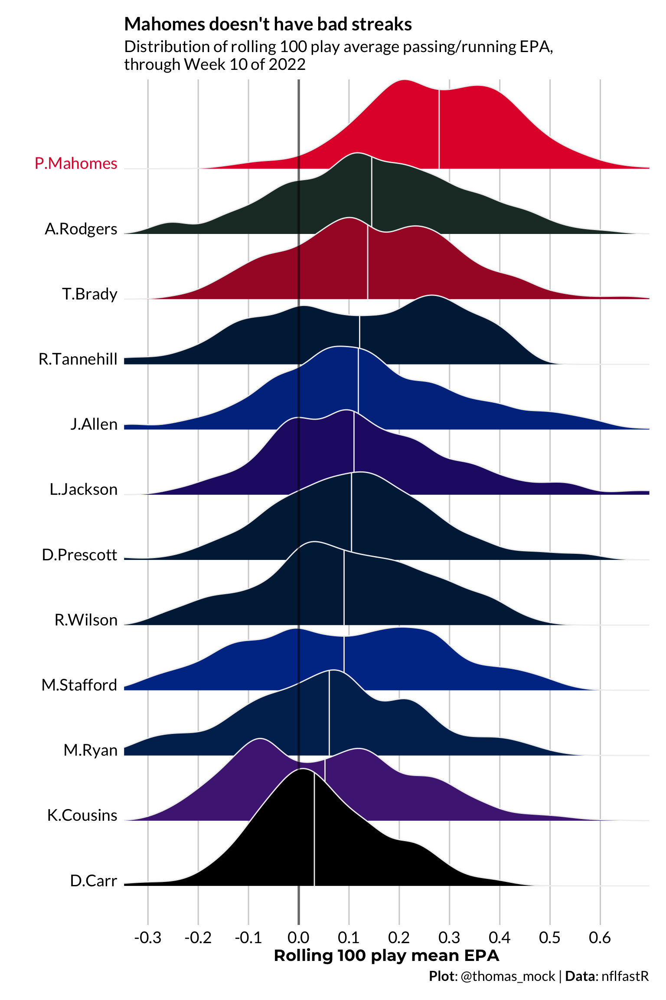

── Attaching packages ────────────────────────────────── tidyverse 1.3.2.9000 ──
✔ ggplot2 3.4.0 ✔ dplyr 1.0.10
✔ tibble 3.1.8 ✔ stringr 1.4.1
✔ tidyr 1.2.1 ✔ forcats 0.5.1
✔ readr 2.1.3 ✔ lubridate 1.8.0
✔ purrr 0.3.5
── Conflicts ────────────────────────────────────────── tidyverse_conflicts() ──
✖ dplyr::filter() masks stats::filter()
✖ dplyr::lag() masks stats::lag()I have been a big fan of the slider package for a long time! It recently had a CRAN release for v0.3 - check out the package documentation at https://slider.r-lib.org/news/index.html.
While it is a useful tool for any time series or rolling summary analysis, I’ll demo an example with some sports data.
Libraries and data
We’ll use nflreadr to load the nflfastR database, along with the tidyverse and slider itself.
Filter the data
We’ll limit ourselves to some of the top QBs in the NFL.
qb_names <- c(
"P.Mahomes",
"A.Rodgers",
"J.Allen",
"D.Prescott",
"R.Tannehill",
"D.Carr",
"R.Wilson",
"T.Brady",
"M.Stafford",
"L.Jackson",
"M.Ryan",
"K.Cousins"
)And then figure out the last date/week:
And then get the values of interest for these specific QBs.
qb_tops <- pbp_db %>%
filter(
!is.na(epa),
play_type %in% c("pass", "run")
) %>%
filter(
passer_player_name %in% qb_names |
rusher_player_name %in% qb_names,
) %>%
mutate(
name = if_else(
is.na(passer_player_name),
rusher_player_name,
passer_player_name
)
) %>%
select(name, posteam, defteam, season, game_id, epa)
glimpse(qb_tops)Rows: 39,188
Columns: 6
$ name <chr> "M.Stafford", "M.Stafford", "M.Stafford", "M.Stafford", "M.Sta…
$ posteam <chr> "DET", "DET", "DET", "DET", "DET", "DET", "DET", "DET", "DET",…
$ defteam <chr> "ARI", "ARI", "ARI", "ARI", "ARI", "ARI", "ARI", "ARI", "ARI",…
$ season <int> 2017, 2017, 2017, 2017, 2017, 2017, 2017, 2017, 2017, 2017, 20…
$ game_id <chr> "2017_01_ARI_DET", "2017_01_ARI_DET", "2017_01_ARI_DET", "2017…
$ epa <dbl> -11.6032015, -0.5463381, -1.5034251, -1.7764411, -0.1084029, -…The data is now ready for some analysis! We hae the player’s name, season, game_id and their EPA (expected points added).
Slide across values
At a basic level, the slide_ functions allow you to reference a specific row along with previous rows (lagging) and the next rows (leading).
I find this most useful for rolling summarizing functions such as rolling means. From the slider docs:
slider is a package for rolling analysis using window functions. “Window functions” is a term that I’ve borrowed from SQL that means that some function is repeatedly applied to different “windows” of your data as you step through it. Typical examples of applications of window functions include rolling averages, cumulative sums, and more complex things such as rolling regressions.
Most typically, this will be used within an existing dataframe, but let’s show a quick example on a vector.
We can return a list of equal length to the input, that accumulates the current row plus 2 values before it. Note that it slides across the values and won’t return more than the 3 requested (current row + 2 rows before).
slide() will return a list object.
slide(1:4, ~.x, .before = 2)[[1]]
[1] 1
[[2]]
[1] 1 2
[[3]]
[1] 1 2 3
[[4]]
[1] 2 3 4Or more realistically, we can generate the rolling mean of the current row and up to two rows before. Note that I’ve now used slide_dbl() - similar to purrr there is specific type safety, and you specify what you want to return (character, dbl, list as default, etc).
slide_dbl(1:4, mean, .before = 2)[1] 1.0 1.5 2.0 3.0This is basically equivalent to the below:
I also want to callout the .complete argument:
Should the function be evaluated on complete windows only? If FALSE, the default, then partial computations will be allowed.
.complete = TRUE will only generate complete computations of the current row and the specific .before or .after amount. See below where we need at least 3 observations to generate the mean, and the first two calculations return NA (since they are length 1 and length 2, respectively.)
slide_dbl(1:4, mean, .before = 2, .complete = TRUE)[1] NA NA 2 3Kind of like the below (but again much more safety/power in slider):
Slide across rows
Now vectors are fine, but we want to use it in a dataframe, across “windows” in a specific column.
We can read the below code as: - For each quarterback - Calculate the rolling average of EPA - Of the current row, and the 99 previous rows - and only for .complete windows - so it will return NA for windows < 100
test_slide <- qb_tops %>%
group_by(name) %>%
summarize(
slide_mean = slide_dbl(
.x = epa, .f = mean,
.before = 99L, .complete = TRUE
),
)`summarise()` has grouped output by 'name'. You can override using the
`.groups` argument.test_slide# A tibble: 39,188 × 2
# Groups: name [12]
name slide_mean
<chr> <dbl>
1 A.Rodgers NA
2 A.Rodgers NA
3 A.Rodgers NA
4 A.Rodgers NA
5 A.Rodgers NA
6 A.Rodgers NA
7 A.Rodgers NA
8 A.Rodgers NA
9 A.Rodgers NA
10 A.Rodgers NA
# … with 39,178 more rowsNotice that the first few rows are all NA since we have specified .complete = TRUE. For our analysis, we’ll want to exclude NA values after.
We can calculate the rolling mean and a lot more!
qb_sum <- qb_tops %>%
group_by(name) %>%
summarize(
slide_mean = slide_dbl(.x = epa, .f = mean, .before = 99L, .complete = TRUE),
slide_median = slide_dbl(.x = epa, .f = median, .before = 99L, .complete = TRUE),
slide_sum = slide_dbl(.x = epa, .f = sum, .before = 99L, .complete = TRUE),
absolute_median = median(epa),
absolute_mean = mean(epa),
absolute_sum = sum(epa),
posteam = tail(posteam, n = 1)
) %>%
ungroup() %>%
filter(!is.na(slide_mean)) %>%
# sort by the overall best median
arrange(desc(absolute_median))`summarise()` has grouped output by 'name'. You can override using the
`.groups` argument.qb_sum |> glimpse()Rows: 38,000
Columns: 8
$ name <chr> "P.Mahomes", "P.Mahomes", "P.Mahomes", "P.Mahomes", "P…
$ slide_mean <dbl> 0.4677885, 0.4682522, 0.5148074, 0.4598741, 0.4597226,…
$ slide_median <dbl> 0.2908019, 0.2908019, 0.3427478, 0.2908019, 0.2908019,…
$ slide_sum <dbl> 46.77885, 46.82522, 51.48074, 45.98741, 45.97226, 45.7…
$ absolute_median <dbl> 0.1340611, 0.1340611, 0.1340611, 0.1340611, 0.1340611,…
$ absolute_mean <dbl> 0.2810101, 0.2810101, 0.2810101, 0.2810101, 0.2810101,…
$ absolute_sum <dbl> 993.6518, 993.6518, 993.6518, 993.6518, 993.6518, 993.…
$ posteam <chr> "KC", "KC", "KC", "KC", "KC", "KC", "KC", "KC", "KC", …Plot the rolling mean
We can then plot the distribution of the rolling mean. First we’ll generate a vector of colors to use for names and then join the team colors to the QB dataframe for plotting.
name_colors <- if_else(
unique(qb_sum$name) == "P.Mahomes",
"#e31837",
"black"
) %>% rev()
dens_df <- qb_sum %>%
group_by(name) %>%
mutate(
median_of_slides = median(slide_mean),
fill_color = if_else(name == "P.Mahomes", "#e31837", "grey"),
out_color = if_else(name == "P.Mahomes", "#e31837", "white")
) %>%
ungroup() %>%
left_join(
nflfastR::teams_colors_logos %>% select(posteam = team_abbr, team_color),
by = "posteam"
)Then we can arrange the data by the overall median, create density ridgelines, and add some context.
mahomes_plot <- dens_df %>%
ggplot(
aes(
x = slide_mean,
y = fct_reorder(name, median_of_slides, .desc = FALSE),
fill = team_color
)
) +
geom_density_ridges(
quantile_lines = TRUE,
quantiles = 2,
color = "#f0f0f0",
size = 0.5
) +
geom_vline(xintercept = 0, linewidth = 1, alpha = 0.5) +
coord_cartesian(xlim = c(-0.3, 0.65)) +
theme_minimal() +
scale_fill_identity(aesthetics = c("fill", "color")) +
scale_x_continuous(breaks = scales::pretty_breaks(n = 8)) +
labs(
x = "Rolling 100 play mean EPA",
y = "",
caption = "\n**Plot**: @thomas_mock | **Data**: nflfastR",
title = "Mahomes doesn't have bad streaks",
subtitle = glue::glue("Distribution of rolling 100 play average passing/running EPA,\nthrough Week {cur_date$week} of {cur_date$season}")
) +
tomtom::theme_538() +
theme(
axis.text.y = element_text(
color = name_colors,
face = c(rep("plain", 16), "bold"),
size = 14,
vjust = 0
),
panel.grid.major.y = element_blank(),
panel.grid.minor = element_blank(),
plot.caption = element_markdown(size = 12),
plot.background = element_rect(fill = "white", color = "white")
)
mahomes_plot
Expand for Session Info
─ Session info ───────────────────────────────────────────────────────────────
setting value
version R version 4.2.0 (2022-04-22)
os macOS Monterey 12.6
system aarch64, darwin20
ui X11
language (EN)
collate en_US.UTF-8
ctype en_US.UTF-8
tz America/Chicago
date 2022-11-17
pandoc 2.19.2 @ /Applications/RStudio.app/Contents/Resources/app/quarto/bin/tools/ (via rmarkdown)
quarto 1.2.242 @ /usr/local/bin/quarto
─ Packages ───────────────────────────────────────────────────────────────────
package * version date (UTC) lib source
dplyr * 1.0.10 2022-09-01 [1] CRAN (R 4.2.0)
forcats * 0.5.1 2021-01-27 [1] CRAN (R 4.2.0)
ggplot2 * 3.4.0 2022-11-04 [1] CRAN (R 4.2.0)
ggridges * 0.5.3 2021-01-08 [1] CRAN (R 4.2.0)
ggtext * 0.1.1 2022-09-14 [1] Github (wilkelab/ggtext@50fdaba)
lubridate * 1.8.0 2021-10-07 [1] CRAN (R 4.2.0)
nflreadr * 1.3.0 2022-08-06 [1] CRAN (R 4.2.0)
purrr * 0.3.5 2022-10-06 [1] CRAN (R 4.2.0)
readr * 2.1.3 2022-10-01 [1] CRAN (R 4.2.0)
sessioninfo * 1.2.2 2021-12-06 [1] CRAN (R 4.2.0)
slider * 0.2.2 2021-07-01 [1] CRAN (R 4.2.0)
stringr * 1.4.1 2022-08-20 [1] CRAN (R 4.2.0)
tibble * 3.1.8 2022-07-22 [1] CRAN (R 4.2.0)
tidyr * 1.2.1 2022-09-08 [1] CRAN (R 4.2.0)
tidyverse * 1.3.2.9000 2022-08-16 [1] Github (tidyverse/tidyverse@3be8283)
[1] /Library/Frameworks/R.framework/Versions/4.2-arm64/Resources/library
──────────────────────────────────────────────────────────────────────────────